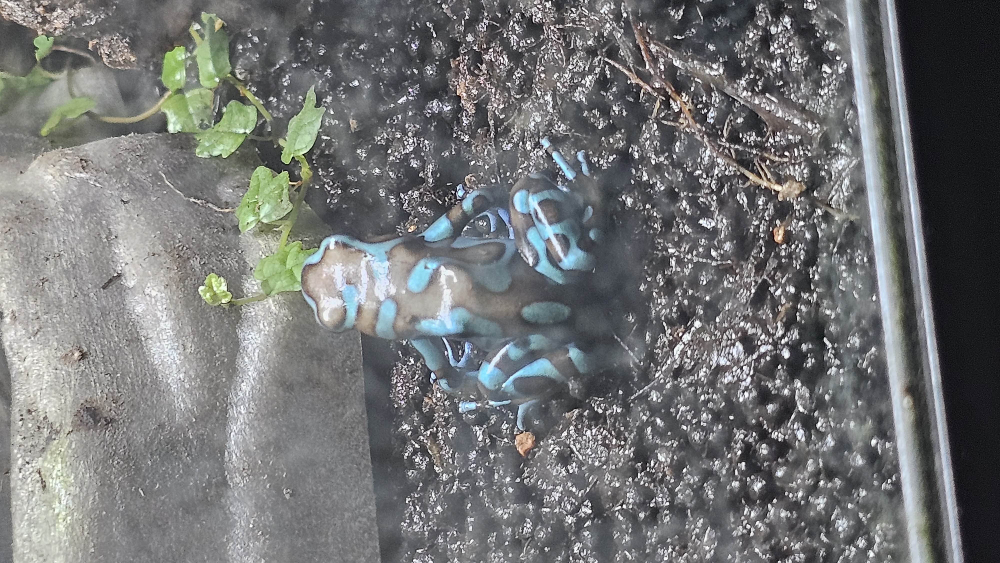
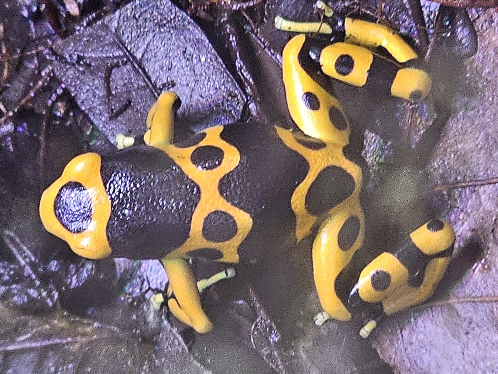
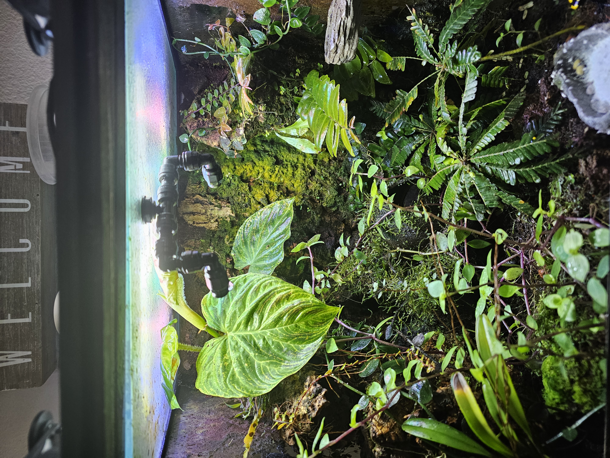

Learn the Art of Dart Frog Keeping
Learn how to keep your poison dart frogs happy and healthy through proven husbandry techniques, bioactive design tools, and over a decade of hands-on experience.
Explore Species


About Me
I have kept dart frogs for over 10 years and have worked with several genera, including Dendrobates, Phyllobates, and Oophaga. I have bred hundreds of dart frogs and raised them through their life stages. I have also been a trusted vendor to local exotic pet stores and hobbyists.
Featured Bioactive Enclosures
A successful bioactive enclosure should include a drainage layer, ABG substrate, leaf litter, tropical plants, springtails, and isopods. Tropical plants such as pothos, vines, and bromeliads should be washed and sanitized before being added to the enclosure.

Quick Care Guide
| Genus | Difficulty | Habits |
|---|---|---|
| Dendrobates | Medium | Confident and best kept in pairs |
| Phyllobates | Easy | Bold and works well in groups of 3 to 6 |
| Oophaga | Medium | Small, shy, and works well in groups of 3 to 5 |
Featured Video
This short video shows poison dart frogs feeding inside a planted bioactive enclosure. It gives visitors a quick look at their behavior and the natural environment created inside the terrarium.